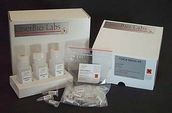
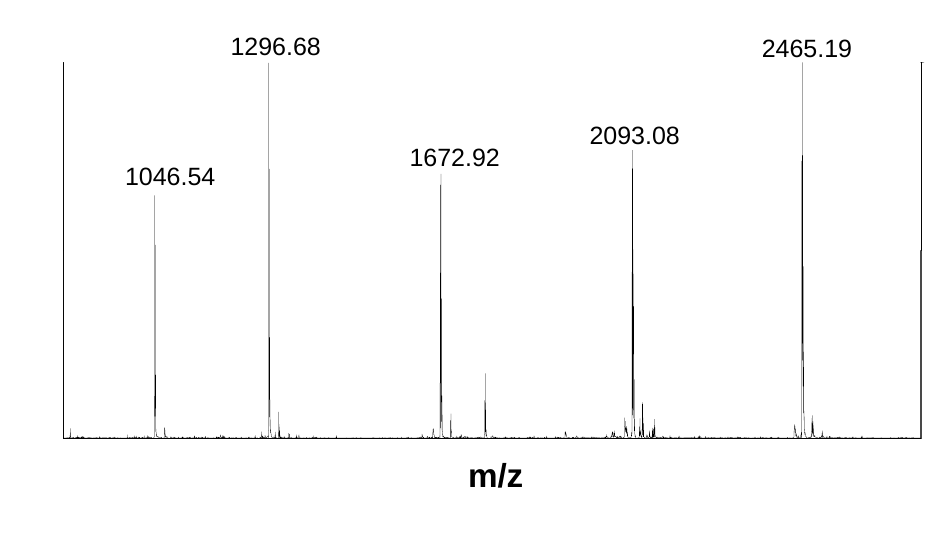
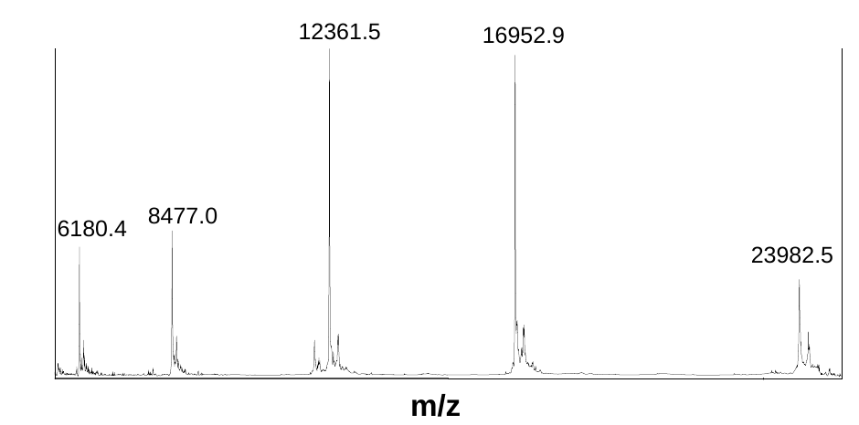

Matrix kits
MALDI matrix kits contain pre-weighed tubes of recrystallized matrices and adatped solvent mixtures. They provide standard analytical conditions and eliminate the need for cumbersome daily preparation of fresh matrix. Recrystallized and caption-depleted matrix provides higher sensitivity and sensitivity and improved signal-to-noise ration when compared to non-recrystallized standard product.

M001
125 €
αCHCA matrix kit
50 eppendorf tubes of recrystallized α-cyano-4-hydroxycinnamic acid (αCHCA) matrix (5 mg each) and one 50 mL solvent vial (50% acetonitrile in water / 0.1% Trifluoroacetic acid) for matrix preparation.
Applications: MALDI-TOF analysis of peptides and proteins, Proteomics
M002
125 €
SA matrix kit
50 eppendorf tubes of recyrstallized Sinapinic acid matrix (3,5 dimethoxy-4-hydroxycinnamic acid / SA - 5 mg each), and one 50 mL solvent vial (30% acetonitrile in water / 0.1% trifluoroacetic acid) for matrix preparation.
Applications: MALDI-TOF analysis of peptides and proteins
M003
125 €
DHB matrix kit
50 eppendorf tubes of recrystalllized 2,5 dihydroxybenzoic acid matrix (Gentisic acid - DHB - 5 mg each), and one 50 mL solvent vial (20% acetonitrile in water / 0.1% trifluoroacetic acid) for matrix preparation.
Applications: MALDI-TOF analysis of peptides and proteins, small molecules
M004
215 €
Peptide/protein 3-matrix kit
- 30 eppendorf tubes of recrystallized α-cyano-4-hydroxycinnamic acid matrix (αCHCA, 5 mg each)
- 30 eppendorf tubes of recrystallized Sinapinic acid (3,5 dimethoxy-4-hydroxycinnamic acid matrix / SA - 5 mg each)
- 30 eppendorf tubes of recrystallized 2,5 dihydroxybenzoic acid matrix (Gentisic acid / DHB - 5 mg each)
- Three solvent vials of 30 mL each (50% acetonitrile in water / 0.1% TFA, 30% acetonitrile in water / 0.1% TFA, 20% acetonitrile in water / 0.1% TFA) for matrix preparation
Applications: MALD-TOF analysis of peptides and proteins, proteomics, small molecules
M005
125 €
sDHB (super DHB) matrix kit
50 eppendorf tubes of recrystallized super DHB matrix (2,5 dihydroxybenzoic acid + 5-methoxysalicylic acid - 5 mg each) and one 50mL solvent vial (20% acetonitrile in water / 0.1% trifluoroacetic) for matrix preparation.
Applications: MALDI-TOF analysis of peptides and proteins
M006
135 €
CA matrix kit
50 eppendorf tubes of recrystallized Caffeic acid matrix (3,4 dihydroxycinnamic acid / CA - 5 mg each) and one 50 mL solvent vial (50% acetonitrile in water / 0.1% trifluoroacetic acid) for matrix preparation.
Applications: MALDI-TOF analysis of peptides and proteins
M007
125 €
FA matrix kit
50 eppendorf tubes of recrystallized Ferulic acid matrix (trans-4-hyrodxy-3-methoxycinnamic acid / FA - 5 mg each) and one 50 mL solvent vial (30% acetonitrile in water / 0.1% trifluoroacetic acid) for matrix preparation
Applications: MALDI-TOF analysis of peptides and proteins
M008
360 €
Peptide/protein 5-matrix kit
- 30 eppendorf tubes of recrystallized α-cyano-4-hydroxycinnamic acid matrix (CHCA - 5 mg each)
- 30 eppendorf tubes of recrystallized Sinapinic acid (3,5 diemthoxy-4-hydroxycinnamic acid matrix / SA - 5 mg each)
- 30 eppendorf tubes of recrystallized 2,5 dihydroxybenzoic acid matrix (Gentistic acid / DHB - 5mg each)
- 30 eppendorf tubes of recrystallized Ferulic acid matrix (trans-4-hydroxy-3-methoxycinnamic acid / FA - 5 mg each)
- Three solvent vials (50% acetonitrile in water / 0.1% TFA, 30% acetonitrile in water / 0.1% TFA, 20% acetonitrile in water / 0.1% TFA) for matrix preparation
Applications: MALDI-TOF analysis of peptides and proteins, proteomics, small molecules
M009
125 €
HPA matrix kit
50 eppendorf tubes of recrystallized 3-hydroxypicolinic acid matrix (HPA - 25 mg each), and one 50 mL solvent vial (25mM diammonium citrate in 50% acetonitrile / water / 0.1% TFA) for matrix preparation
Applications: MALDI-TOF analysis of oligonucleotides
M010
125 €
246THAP matrix kit
50 eppendorf tubes of recrystallized 2,4,6 trihydroxyacetophenone matrix (246THAP - 10 mg each), and one 50 mL solvent vial (25mM diammonium citrate in 50% acetonitrile / water / 0.1% TFA) for matrix preparation
Applications: MALDI-TOF analysis of oligonucleotides
M012
185 €
Ouligonucleotide matrix kit
- 30 eppendorf tubes of recrystallized 3-hydroxypicolinic acid matrix (HPA - 25 mg each)
- 30 eppendorf tubes of recrystallized 2,4,6 trihydroxyacetophenone matrix (246THAP - 10 mg each)
- One 60 mL solvent vial (25mM diammonium citrate in 50% acetonitrile / water / 0.1% TFA) for matrix preparation
Applications: MALDI-TOF analysis of oligonucleotides
M012
185 €
Ouligonucleotide matrix kit
- 30 eppendorf tubes of recrystallized 3-hydroxypicolinic acid matrix (HPA - 25 mg each)
- 30 eppendorf tubes of recrystallized 2,4,6 trihydroxyacetophenone matrix (246THAP - 10 mg each)
- One 60 mL solvent vial (25mM diammonium citrate in 50% acetonitrile / water / 0.1% TFA) for matrix preparation
Applications: MALDI-TOF analysis of oligonucleotides
M101
160 €
Recrystallized αCHCA matrix
5 tubes of 200 mg each recrystallized α-cyano-4-hydroxycinnamic acid matrix (αCHCA)
M102
185 €
Recrystallized SA matrix
5 tubes of 200 mg each recrystallized Sinnapinic acid matrix (3,5 dimethoxy-4-hydroxycinnamic acid / SA)
M103
150 €
Recrysallized DHB matrix
5 tubes of 200 each recrystallized 2,5 dihydroxybenzoic acid matrix (Gentisic acid / DHB)
M104
150 €
Recrystallized Peptide/protein 3-matrix kit
3 tubes of 200 mg each of recrystallized matrix:
- α-cyano-4-hyroxycinnamic acid (αCHCA)
- Sinapinic acid (3,5 dimethoxy-4-hydroxycinnamic acid - SA)
- 2,5 dihydroxybenzoic acid ( Gentisic acid - DHB)
M105
160 €
Recrystallized sDHB matrix
5 tubes of 200 mg each recrystallized super DHB matrix (2,5 dihydroxybenzoic acid + 5-methoxysalicylic acid)
M106
185 €
Recrystallized CA matrix
5 tubes of 200 mg each recrystallized Caffeic acid matrix (3,4 dihydroxycinnamic acid / CA)
M107
150 €
Recrystallized FA matrix
5 tubes of 200 mg each recrystallized Ferulic acid matrix (trans-4-hydroxy-3-methoxycinnamic acid / FA)
M108
185 €
Recrystallized Peptide/protein 5-matrix kit
5 tubes of 200 mg each of recrystallized matrix:
- α-cyano-4-hydroxycinnamic acid (αCHCA)
- Sinapinic acid (3,5 dimethoxy-4-hydroxycinnamic acid - SA)
- 2,5 dihydroxybenzoic acid (Gentistic acid - DHB)
- Caffeic acid matrix (3,4 dihydroxycinnamic acid / CA)
- Ferulic acid matrix (trans-4-hydroxy-3-methoxycinnamic acid / FA)
M109
160 €
Recrystallized HPA matrix
5 tubes of 200 each recrystallized 3-hydroxypicolinic acid (HPA)
M110
185 €
Recrystallized 246THAP matrix
5 tubes of 200 mg each recrystallized 2,4,6 trihydroxyacetophenone matrix (246THAP)
M112
150 €
Recrystallized oligonucleotide 3-matrix kit
3 tubes of 200 mg each recrystallized matrix
- 3-hydroxypicolinic acid matrix (HPA)
- Picolinic acid matrix (PA)
- 2,4,6 trihydroxyacetophenone matrix (246THAP)
Peptide calibration mixtures

C101
185 €
Peptide calibration mix 1 (PepMix1) 1000-2500 Da
5 tubes of peptide calibration mixture 1. Each tube provides 1000 calibration points

Contains: | Angiotensi II | (1046.2 Da) |
| Angiotensi I | (1296.5 Da) |
| Neurotensin | (1672.9 Da) |
| ACTH[1-17] | (2093.5 Da) |
| ACTH[18-39] | (2465.7 Da) |
C102
185 €
Peptide calibration mix 2 (PepMix2) 1500-6000 Da
5 tubes of peptide calibration mixture 2. Each tube provides 1000 calibration points

Contains:| Neurotensin | (1672.9 Da) |
| ACTH[18-39] | (2465.7 Da) |
| Bovine Insulin chain B | (3495.9 Da) |
| Bovine insulinn | (5733.6 Da) |
C103
185 €
Peptide calibration mix 3 (PepMix3) 3000-9000 Da
5 tubes of peptide calibration mixture 3. Each tube provides 1000 calibration points

Contains:| Bovine Insulin chain B | (3495.9 Da) |
| Bovine Insuline | (5733.6 Da) |
| Aprotinin | (6511.5 Da) |
| Ubliquitin bovine | (8564.8 Da) |
C104
185 €
Peptide calibration mix 4 (ProteoMix) 500-3500 Da
5 tubes of peptide calibration mixture 4. Each tube provides 1000 calibration points. Specially developed for calibration of proteolytic peptide mixtures and proteomics applications

Contains:| Bradykinin[1-5] | (572.7 Da) |
| Angiotensin II | (1046.2 Da) |
| Neurotensin | (1672.9 Da) |
| ACTH[18-39] | (2465.7 Da) |
| Bovine Insulin chain B | (3495.9 Da) |
C105
185 €
Peptide calibration mix 5 (PepMix5) 500-2000 Da
5 tubes of peptide calibration mixture 5. Each tube provides 1000 calibration points

Contains:| Bradykinin[1-5] | (572.7 Da) |
| Bradykinin[1-7] | (756.9 Da) |
| Bradykinin | (1060.2 Da) |
| Angiotensin I | (1296.5 Da) |
| Neurotensin | (1672.9 Da) |
C106
185 €
Peptide calibration mix 6 (PepMix6) 350-1000 Da
5 tubes of peptide calibration mixture 6. Each tube provides 1000 calibration points

Contains:| Bradykinin[1-5] | (572.7 Da) |
| Bradykinin[1-7] | (756.0 Da) |
| Bradykinin[1-8] | (904.0 Da) |
Protein calibration mixtures

C107
185 €
Protein calibration mix 1 (ProMix1) 5,700-17,0000 Da
5 tubes of protein calibration mixture 1. Each tube provides 1000 calibration points

Contains:| Bovine Insulin | (5733.6 Da) |
| Horse heart cytochrome C | (12360.1 Da) |
| Horse myoglobin | (16951.5 Da) |
C108
185 €
Protein calibration mix 2 (ProMix2) 8,000-24,000 Da
5 tubes of protein calibration mixture 2. Each tube provides 1000 calibration points

Contains:| Horse heart cytochrome C | (12360.1 Da) |
| Horse myoglobin | (16951.5 Da) |
| Trypsinogen | (23980.9 Da) |
C109
185 €
Protein calibration mix 3 (ProMix3) 23,000-66,000 Da
5 tubes of protein calibration mixture 3. Each tube provides 1000 calibration points

Contains:| Trypsinogen | (23980.9 Da) |
| Yeast enolase | (46670.9 Da) |
| Bovine serum albumin | (66429.9 Da) |
C110
185 €
Protein calibration standards 12,000-66,000 Da
5 tubes of individual protein calibrants. Each tube provides 1000 calibration points

Contains:| Horse heart cytochrome C | (12360.1 Da) |
| Horse myoglobin | (16951.5 Da) |
| Trypsinogen | (23980.9 Da) |
| Yeast enolase | (46670.9 Da) |
| Bovine serum albumin | (66429.9 Da) |
Calibration kits
Our calibration kits contain calibrated peptide and protein mixtures, designed for analytical reproducibility and consistent signal-to-noise ratio, as well as individual calibrants and diluent.
They provide reproducible, standard analytical conditions to eliminate the need for cumbersome preparation of calibrant mixtures.
They are prepared and conditioned with the highest purity chemicals, in a form adapted to everyday use in the mass spectrometry laboratory.

C001
245 €
Peptide calibration kit I (1000-8500 Da)
- Peptide calibration mixtures 1 (PepMix1), 2 (PepMix2) and 3 (PepMix3). 1 tube each. Each tube provides 1000 calibration points
- Four single calibrant peptides: Angiotensin II (1046.2 Da), ACTH[18-39] (2465.7 Da), Bovine Insulin chain B (3495.9 Da), Bovine Insulin (5733.6 Da)
- 1 tube of mixture diluent (0.01% TFA)
C002
245 €
Peptide calibration kit II (0-2000 Da)
- Peptide calibration mixtures 1 (PepMix1), 5 (PepMix5) and 6 (PepMix6). 1 tube each. Each tube provides 1000 calibration points
- Four single calibrant peptides: Bradykinin[1-5] (572.7 Da), Angiotensin II (1046.2 Da), Neurotensin (1672.9 Da), ACTH[18-39] (2465.7 Da)
- 1 tube of mixture diluent (0.01% TFA)
C003
245 €
Protein calibration kit (5-100kDa)
- 1 tube each of protein calibration mixtures 1 (ProMix1), 2 (ProMix2) and 3 (ProMix3). Each tube provides 1000 calibration points.
- Four single calibrant proteins: Bovine Insulin (5733.6 Da), Horse myoglobin (16951.5 Da), Yeast enolase (46670.9 Da), Bovine serum albumin (66429.9 Da)
- 1 tube of mixture diluent (0.01% TFA)
C004
360 €
Peptide / Protein calibration kit (1-100 kDa)
- 1 tube of peptide calibration mixtures 1 (PepMix1), 2 (PepMix2) and 3 (PepMix3). Each tube provides 1000 calibration points
- 1 tube each of protein calibration mixtures 2 (ProMix2) and 3 (ProMix3). Each tube provides 100 calibration points
- Four single calibrant peptides: Angiotensin II (1046.2 Da), ACTH[18-39] (2465.7 Da), Bovine Insulinn chain B (3495.9 Da), Bovine Insulin (5733.6 Da)
- Four single calibrant proteins: Horse myoglobin (16951.5 Da), Trypsinogen (23980.9 Da), Yeast enolase (46670.9 Da), Bovine serum albumin (66429.9 Da)
- 1 tube of mixture diluent (0.01% TFA)
Protein trypsin digest kits
Our protein digests kits contain calibrated peptide mixtures, obtained from controlled trypsin digestion of well characterized proteins. They provide quantified, standardized digests for proteomics and LC-MS applications and eliminate the variability and cumbersome preparation of trypsin digestions.
Digests are prepared with pure natural proteins and conditioned, in a form adapated to everyday use int he mass spectrometry lab

D101
185 €
Myoglobin trypsin digest
5 tubes of digest D101. Each tube contains 50 picomoles of digested protein
D102
185 €
Enolase trypsin digest
5 tubes of digest D102. Each tube contains 50 picomoles of digested protein
D103
185 €
Glutamate dehydrogenase trypsin digest
5 tubes of digest D103. Each tube contains 50 picomoles of digested protein
D104
185 €
BSA trypsin digest
5 tubes of digest D104 Each tube contains 50 picomoles of digested protein
D105
185 €
Glycogen phosphorylase trypsin digest
5 tubes of digest D105 Each tube contains 50 picomoles of digested protein
D106
185 €
Trypsin digest mix
1 tube each of:
- D101 (Myoglobin)
- D102 (Enolase)
- D103 (Glutamate dehydrogenase)
- D104 (BSA)
- D105 (Glycogen phosphorylase)
Each tube contains 50 picomoles of digested proteins